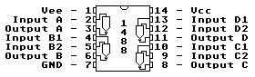
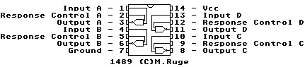

Previous
Next
TOC
Die Pinbelegung der RS232 Schnittstellentreiber
(Tip für manche Kataloge: 1488 = 75188 und 1489 = 75189)


Eine Übersicht über die Industrietauglichen Seriellen Schnittstellen
RS-232
Die RS-232 wurde ursprünglich für die Datenübertragung zwischen Host-
Computern und Ihren entfernt stationierten Terminals entwickelt. In
heute gebräuchlichen Computern werden von ursprünglich 25 Signalen
nach EIA-Norm nur noch 9 verwendet wovon zur reinen Signalübertragung
3 Signale benötigt werden. Oft wird diese Schnittstelle auch als
V.24
Schnittstelle bezeichnet.
RS-422
Die RS-422 bietet eine hohe Störfestigkeit da nur Spannungsdiffe-
renzen ausgewertet werden und daher auch eine galvanische Trennung
zwischen den einzelnen Stationen möglich ist. Zur Datenübertragung
werden hier bereits 4 Signalführende Leitungen benötigt.
RS-485
Der wesentliche Unterschied der RS-485 Schnittstelle zu den oben auf-
geführten Schnittstellen ist der, das es sich hier um ein Bussystem
mit maximal32 Teilnehmern und einer Gesamtlänge von maximal 1200
Metern handelt und nicht um eine Punkt-zu-Punkt Verbindung. Für die
Datenübertragung in beide Richtungen werden normalerweise 2 Signal-
führende Leitungen mit einer Steuerleitung verwendet.
HDLC
High Level Data Link Control-Prozedur. Die HDLC-Prozedur dient zur
Steuerung und Sicherung von Datenübertragungen. Sie ist codeabhängig
und erlaubt einen Informationsfluß in beiden Richtungen. Der Daten-
strom wird dazu in Blöcke unterteilt, die durch Prüf- und Steuerin-
formationen ergänzt werden. Im Empfänger wird anhand der Prüfinfor-
mation die Richtigkeit der Nachricht festgestellt und jeder richtige
Block dem Sender quittiert. Stellt der Sender fehlende Quittierung
fest, so unterbricht er die laufende Aussendung und wiederholt die
nichtquittierten Blöcke.
SDLC
Synchronous Data Link Control-Prozedur. Bitorientiertes Steuerungs-
verfahren wurde von IBM entwickelt.
UDLC
Universal Data Link Control-Prozedur. Bitorientiertes Steuerungs-
verfahren wurde von UNIVAC entwickelt.
weiterblättern
Kapitel Die Pinbelegung der RS232 Schnittstellentreiber, Seite 1